Desenvolvedor:
Hendrick Scheifer
Screenshots:
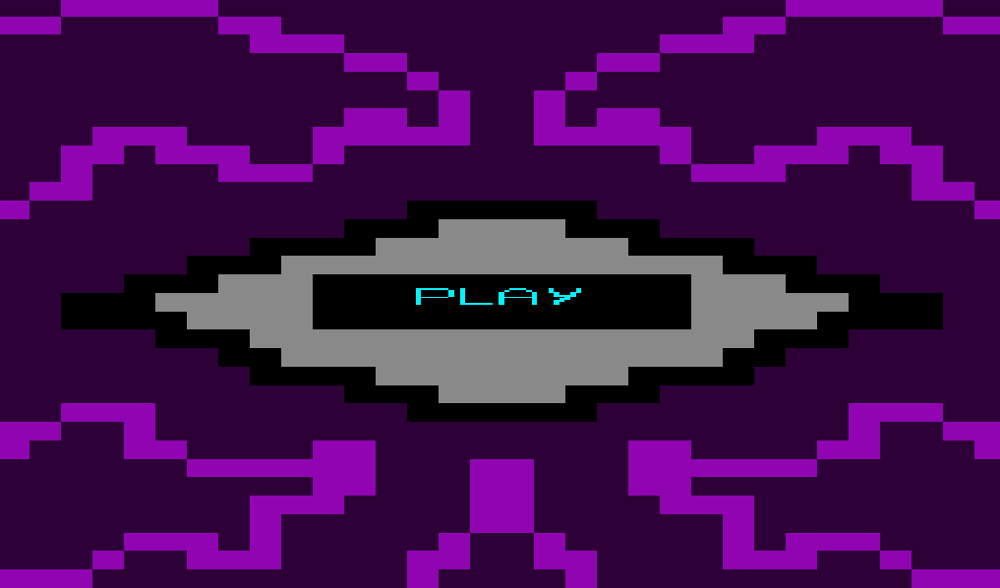
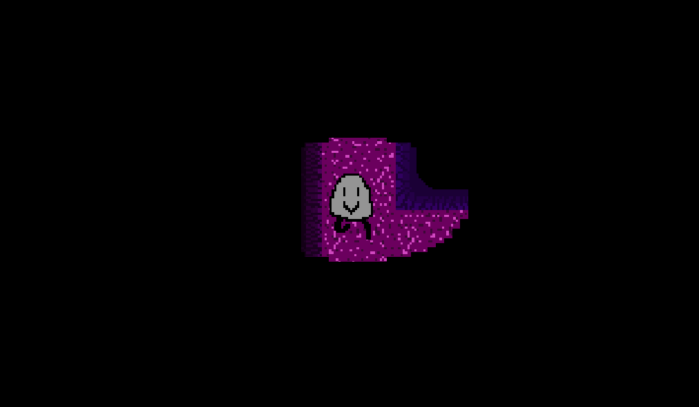
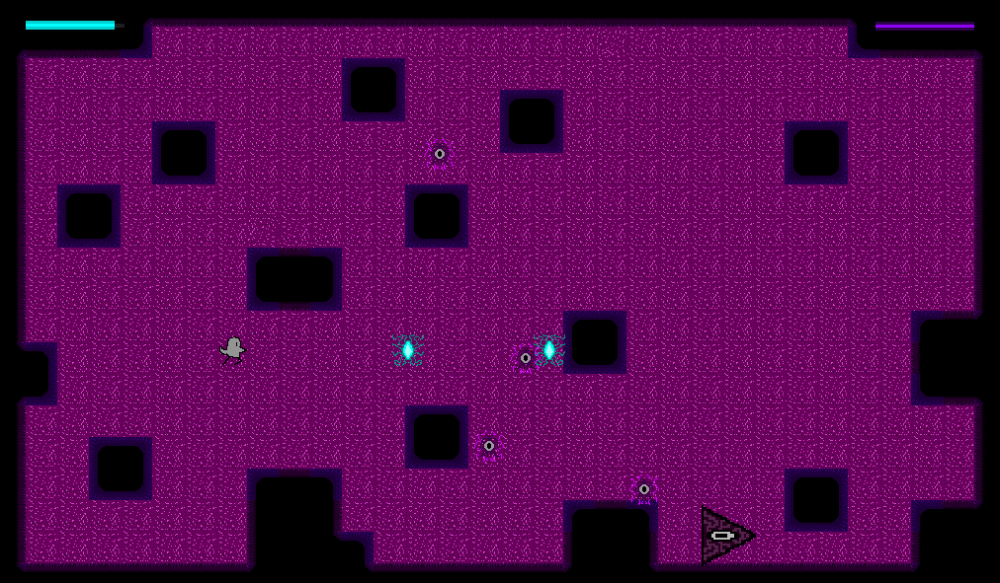
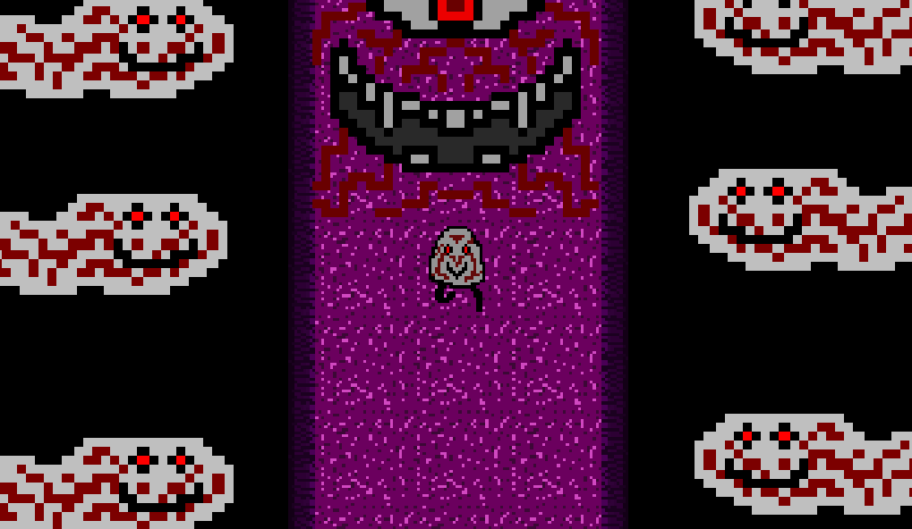
Sobre:
Jogo desenvolvido no Godot, sobre uma alma perdida em busca de retornar ao seu corpo.
Jogar
Desenvolvedor:
Pedro Ramos Pereira
Screenshots:
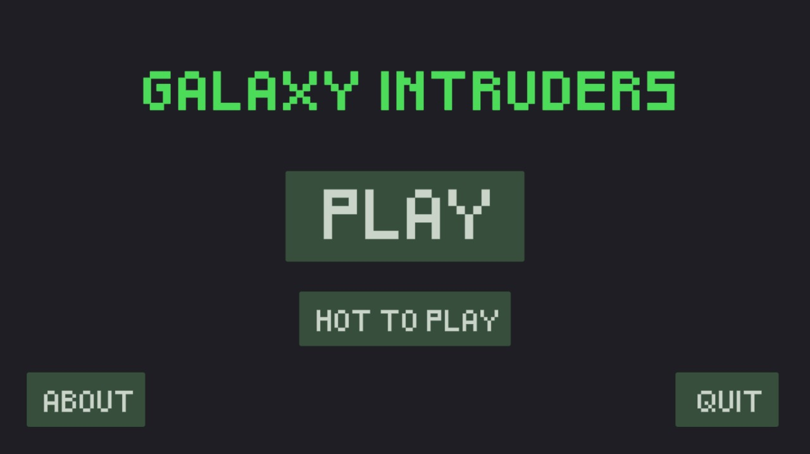
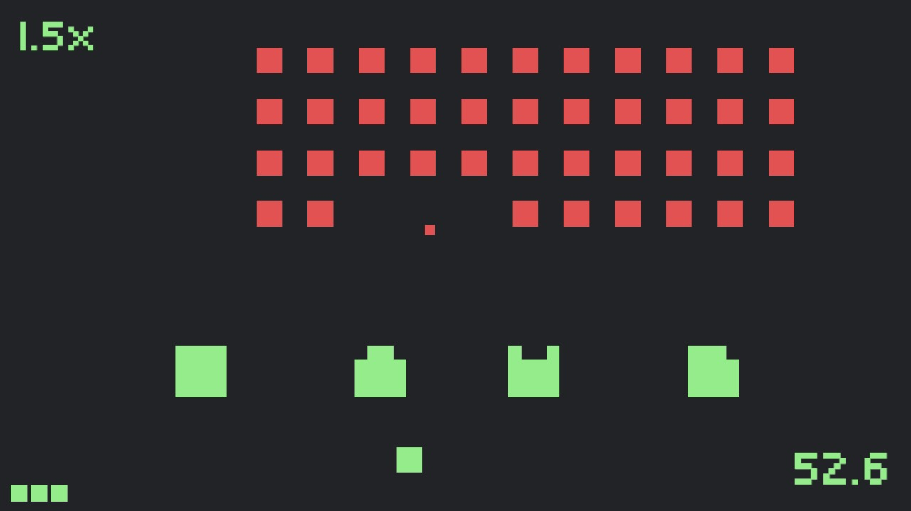
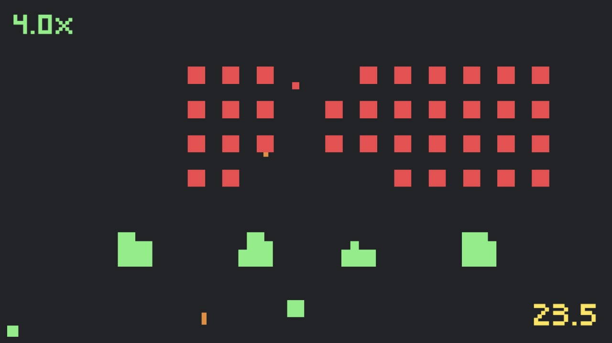
Sobre:
Jogo desenvolvido no Unity, fortemente baseado em Space Invaders.
Jogar
Desenvolvedor:
Fabricio Flávio Martins Damasceno
Screenshots:
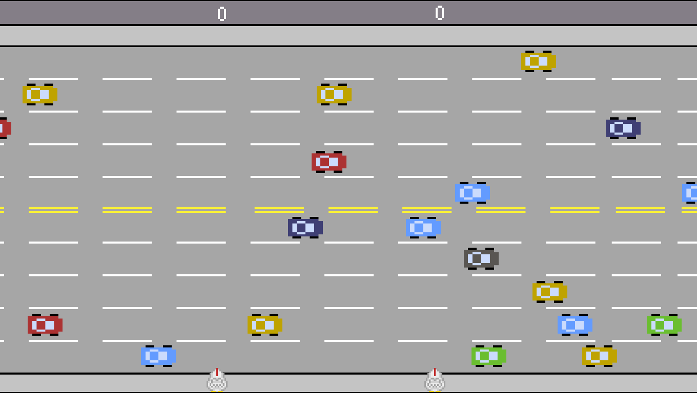
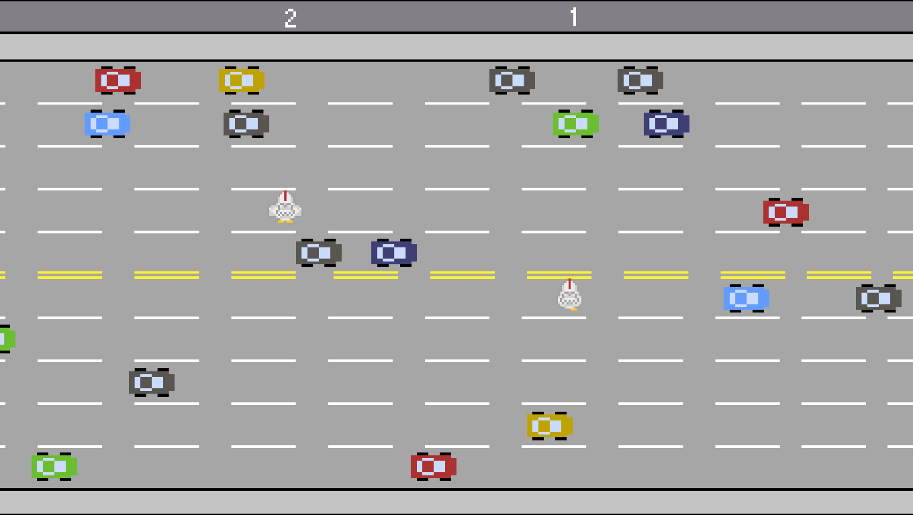
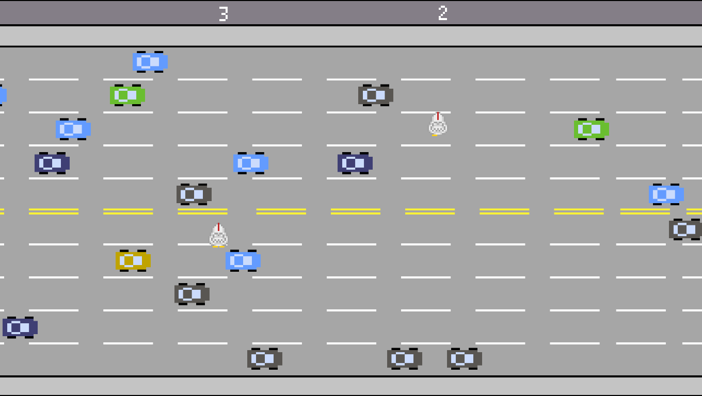
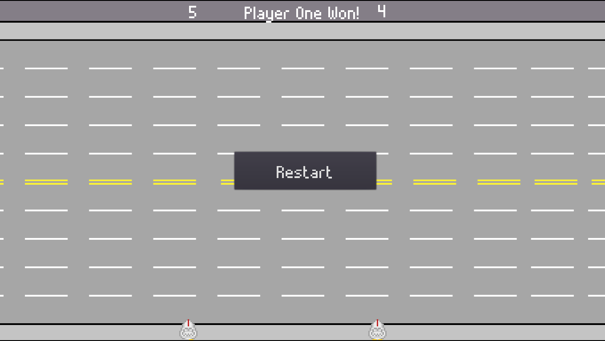
Sobre:
Jogo desenvolvido no Godot, réplica de Freeway, um clássico jogo de Atari
Jogar